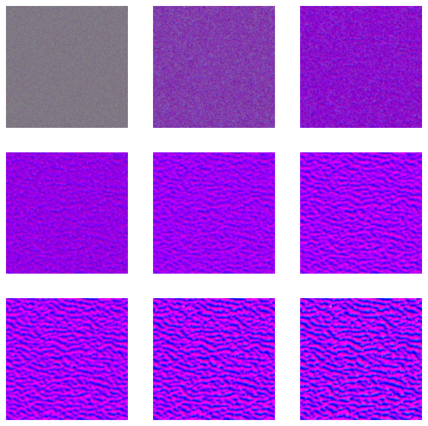

import random
from functools import partial
from pdb import set_trace as bp
import matplotlib.pyplot as plt
import numpy as np
import timm
import torch
import torch.nn.functional as F
import torchvision.transforms as T
from einops import rearrange
from IPython.display import display
from torch import nn, tensor
from tqdm import trange
from slowai.learner import (
DataLoaders,
Learner,
MetricsCB,
ProgressCB,
TrainCB,
TrainLearner,
def_device,
)
from slowai.style_transfer import GramLoss, pt_normalize_imagenet
from slowai.utils import download_image, show_image, show_imagesNeural Cellular Automata
In this module, we look creating complex emergent behavior by training agents with simple rules
Complex behavior can emerge from simple rules. Conway’s game of life is a famous example.

This lesson was inspired by this distil.pub article that demonstrates a self-organizing, self-repairing system. How do we train something like this?
This starts with a neural network that takes the cell state and that that of its neighbors and predicts a evolution that leads to a particular image. Unfortunately, this doesn’t produce a stable output. We also need to train with random initialization that gives it the ability to correct and maintain its shape.
We’ll train a simple texture restoration model, which allows us to leverage the Gram loss from the previous module.
Defining the model
I = tensor([[0.0, 0.0, 0.0], [0.0, 1.0, 0.0], [0.0, 0.0, 0.0]])
G = tensor([[-1.0, 0.0, 1.0], [-2.0, 1.0, 2.0], [-1.0, 0.0, 0.1]])
S = tensor([[1.0, 2.0, 1.0], [2.0, -12.0, 2.0], [1.0, 2.0, 1.0]])
filters = torch.stack([I, G, G.T, S]).to(def_device)
channels, _, _ = filters.shapeshow_images([I, G, G.T, S])The last filter is called a Sobel operator.

def make_grid(n, sz=128):
return torch.zeros(n, channels, sz, sz).to(def_device)def apply_filters(x):
b, c, w, h = x.shape
y = rearrange(x, "b c h w -> (b c) h w").unsqueeze(1)
y = F.pad(y, (1, 1, 1, 1), "circular")
y = F.conv2d(y, filters.unsqueeze(1))
return y.reshape(b, -1, w, h)grid = make_grid(1)
grid.shapetorch.Size([1, 4, 128, 128])Our “world” is \(128 \times 128\) and each position carries four data points or channels.
x = apply_filters(grid)
x.shapetorch.Size([1, 16, 128, 128])This gives us 16 model inputs per pixel, which comes from the four filters applied to each of the four channels .
class LinearBrain(nn.Module):
def __init__(self, grid, nh=8, nc=4, nf=4):
"""NCA update model
Args:
grid: grid, needed for shape
nh: number of hidden dimensions
nc: number of input channels
nf: number of filters
"""
super().__init__()
layers = [
# Bias must be true here to break the symmetry of a newly
# initialized zero-filled grid
nn.Linear(nc * nf, nh, bias=True),
nn.ReLU(),
# The bias is false here because updates should be centered
# around 0; and, we also want to keep the number of parameters
# to a minimum
nn.Linear(nh, nc, bias=False),
]
self.layers = nn.ModuleList(layers)
self.grid = grid
def forward(self, x):
x = rearrange(x, "b c h w -> (b h w) c")
for layer in self.layers:
x = layer(x)
return x.reshape(self.grid.shape)m = LinearBrain(grid)
m.to(def_device)
m.forward(x).shapetorch.Size([1, 4, 128, 128])An alernate approach to the reshaping to use a convolution with a kernel size of 1.
class Brain(nn.Module):
def __init__(self, nh=8, nc=4, nf=4):
"""NCA update model
Args:
nh: number of hidden dimensions
nc: number of input channels
nf: number of filters
"""
super().__init__()
layers = [
nn.Conv2d(nc * nf, nh, kernel_size=1),
nn.ReLU(),
nn.Conv2d(nh, nc, kernel_size=1, bias=False),
]
self.layers = nn.ModuleList(layers)
def forward(self, x):
for layer in self.layers:
x = layer(x)
return xm = Brain()
m.to(def_device)
m.forward(x).shapetorch.Size([1, 4, 128, 128])This is quite elegant! It’s also highly performant on GPUs, since they were designed to run matrix operations on each pixel.
Consolidating the model
Let’s put this all into a class
class NCA(Brain):
@torch.no_grad()
def init_(self):
w2 = self.layers[-1]
w2.weight.data.zero_()
def forward(self, grid, update_rate=0.5):
y = apply_filters(grid)
for layer in self.layers:
y = layer(y)
b, c, h, w = y.shape
# Randomly dropout some updates to reflect the non-global
# update behavior of biological systems
y = F.dropout(y, update_rate)
return grid + ym = NCA()
m.to(def_device)
x = m.forward(grid)
x.shape, grid.shape(torch.Size([1, 4, 128, 128]), torch.Size([1, 4, 128, 128]))Training
starry_night = "https://sanctuarymentalhealth.org/wp-content/uploads/2021/03/The-Starry-Night-1200x630-1-979x514.jpg"
target = download_image(starry_night)
target = pt_normalize_imagenet(target)
show_image(target);Clipping input data to the valid range for imshow with RGB data ([0..1] for floats or [0..255] for integers).def to_rgb(x):
return x[:, :3, :, :] + 0.5class StyleLoss:
def __init__(
self,
target_img,
target_layers=(1, 6, 11, 18, 25),
vgg=None,
):
if vgg is None:
self.vgg = timm.create_model("vgg16", pretrained=True).to(def_device)
else:
self.vgg = vgg
for p in self.vgg.parameters():
# No need to train VGG
p.requires_grad = False
self.target_layers = target_layers
with torch.no_grad():
self.tgt = self.grams(target_img.to(def_device))
def grams(self, x):
x = pt_normalize_imagenet(x)
if len(x) < 4:
x = x.unsqueeze(0)
grams_ = []
for i, layer in enumerate(self.vgg.features[: max(self.target_layers) + 1]):
b, c, h, w = x.shape
x = layer(x)
if i in self.target_layers:
f = x.clone() # Not sure if I need this
g = torch.einsum("bchw, bdhw -> bcd", f, f) / (h * w)
grams_.append(g)
return grams_
def __call__(self, img):
src = self.grams(img)
# Writing MSE out manually here helps by broadcasting the style gram
# matrices to each of the sample image gram matrices
return sum((f1 - f2).pow(2).mean() for f1, f2 in zip(src, self.tgt))loss_f = StyleLoss(torch.randn((3, 64, 64)).to(def_device))def train(
stlye_img,
style_loss_scale=0.1,
n=128,
sz=256,
bs=4,
step_n_min=32,
step_n_max=96,
lr=1e-3,
train_iterations=1200,
model_application_iterations=(32, 96),
):
nca = NCA()
nca.to(def_device)
nca.init_()
pool = make_grid(n, sz=sz).to(def_device)
loss_f = StyleLoss(stlye_img)
opt = torch.optim.Adam(nca.parameters(), lr)
ipy_output = None
K = 3.5
fig, (a0, a1, a2) = plt.subplots(1, 3, figsize=(K * 3, K))
losses = []
pbar = trange(train_iterations)
for i in pbar:
# Subsample with replacement
subpool_idxs = torch.randint(0, n, (bs,))
subpool = pool[subpool_idxs]
# Randomly zero out samples
if random.random() > 0.8:
subpool[:1] = make_grid(1, sz=sz).to(def_device)
# Apply the model
min_, max_ = model_application_iterations
n_iterations = random.randrange(min_, max_ + 1)
for _ in range(n_iterations):
subpool = nca(subpool)
if i > 0:
assert not (subpool == 0).all()
# Update the pool
with torch.no_grad():
pool[subpool_idxs] = subpool
# Compute loss
style_loss = loss_f(to_rgb(subpool)) * style_loss_scale
overflow_loss = (subpool - subpool.clamp(-1.0, 1.0)).abs().sum()
loss = style_loss + overflow_loss
losses.append((loss.item(), style_loss.item(), overflow_loss.item()))
pbar.set_description(f"{style_loss.item():.2f} {overflow_loss.item():.2f}")
if i % 100 == 0 and i > 0:
x = range(0, i + 1)
combined, style_losses, overflow_losses = zip(*losses)
for ax, y, label in [
(a0, style_losses, "style"),
(a1, overflow_losses, "overflow"),
(a2, combined, "overall"),
]:
ax.clear()
ax.scatter(x, y, label=label)
ax.set_yscale("log")
ax.legend()
fig.tight_layout()
if ipy_output is None:
ipy_output = display(fig, display_id=True)
else:
ipy_output.update(fig)
# Backprop with gradient normalization
loss.backward()
for p in nca.parameters():
p.grad /= p.grad.norm() + 1e-8
opt.step()
opt.zero_grad()
return nca, pool.detach()model, pool = train(target)1258.36 34410.16: 9%|███████████▎ | 108/1200 [00:10<01:28, 12.38it/s]
750.20 28.38: 100%|█████████████████████████████████████████████████████████████████████████████████████████████████████████████████████████████████| 1200/1200 [01:56<00:00, 10.28it/s]show_images(to_rgb(pool).clip(0, 1)[:8, ...])Starting from an empty grid
images = []
x = make_grid(n=1)
for i in range(90):
x = model(x)
if i % 10 == 0:
imgs = to_rgb(x).clip(0, 1).squeeze()
images.append(imgs)
show_images(images)